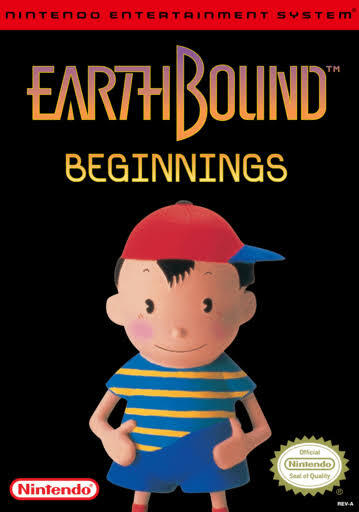
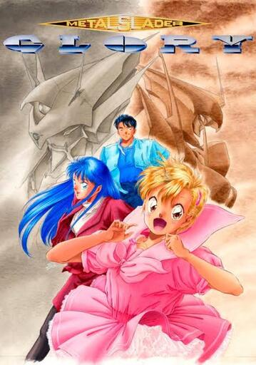

EarthBound Beginnings



Ano: 2015
Desenvolvedora: Ape Inc. / HAL Laboratory
Publicadora: Nintendo
Um jovem chamado Ninten descobre que possui poderes psíquicos e parte em uma aventura para salvar o mundo de uma ameaça alienígena misteriosa. Com um estilo único de RPG, o jogo mistura humor, drama e elementos da cultura pop dos anos 80.
(USA)
Metal Slader Glory

Ano: 1991
Desenvolvedora: HAL Laboratory
Publicadora: HAL Laboratory
Em um futuro distante, o piloto Hayato Kanzaki luta contra uma ameaça de robôs rebeldes que podem destruir a humanidade. Com gráficos detalhados para a época e uma narrativa complexa, o jogo combina elementos de ação e aventura sci-fi.
(JP - English Patched)